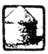
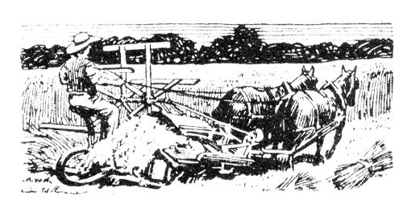
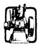
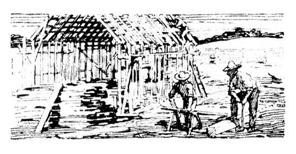

Answers to Questions Ibolet Spots and Slains
To Take Out Green Paint
How can I take green paint off my crepe dress? R.F.T.
IF THE paint is very fresh hot, soapy water will usually wash it all off. A soft brush will assist in the removal. If paint is dried on it is much harder to remove. Ii such is the case try soaking the stain with turpentine. Patience and time will be required for this, and again the soft brush will help. A still older and dried stain means that there must be a softening of the paint before it can be removed. To soften it apply linseed oil. Turpentine should next be applied to dissolve the paint.
What wilt take blueberry stains off a new white silk gown? E. S. AIX.
POUR lukewarm water through the spot, being careful to use just as little water as possible. If one fears to pour the water through lay a clean white cloth, folded in several thicknesses, under the stain; then with a clean white cloth over the end of the finger sponge the spot. Continue until the spot is removed. A water ring is likely to follow, because the new glaze of the silk has been injured. This ring can be almost and usually entirelyremoved by steaming. To (to this tie a piece of w white cloth over the spout of the teakettle. Place about an inch of water in the kettle and let boil hard. As the steam is forced out through the cloth shake that part of the garment containing the water ring in the steam. Continue until the fabric is evenly moist, and then withdrawing it from the steam, shake until dry. Sometimes the whole breadth containing the spot will need to be steamed.
What will remove grasshopper stains? C. F. J.
GRASSHOI PER stains can often be removed with clear water. This stain. like most other stains, is always easier to remove when fresh. Soap will not set the stain, but is not often needed.
Varnish on Linen
Is(? a bottle of aromatic spirits of ammonia on nay white bureau cover. The cover stuck to the bureau, leaving a great stain on the linen. How can this be removed? J, T ,J
REMOVE the varnish, which was the cause of this stain, by some of the very substance which produced it. Varnish dissolves in alcohol, so if you prefer, you may use clear alcohol on the stain or a few drops of the aromatic spirits of ammonia.
1 cupful of milk
1 cupful of butter and lard
1 cupful of mater I yeast cake.
1 cupful of sugar 1 level teaspoonful salt
2 eggs
SCALD the milk and while it is hot pour it over the shortening and the sugar, add the water, and when lukewarm stir in the yeast cake tht has been well dissolved in half a cupful of warm water. Add the salt and enough flour to make a batter that will drop from a spoon. Beat it thoroughly and stand it in a warm place overnight.
In the morning add the well-beaten eggs and enough flour to make a soft dough. Knead lightly and well, put back into the bowl and let rise until it doubles itself. Separate the dough in half, and roll each half out in a thin sheet. Spread this with soft butter, brown sugar and cinnamon, and scatter over it some currants that have been washed and dried. Roll in a long roll, and with a sharp knife cut off buns about an inch in thickness. Place them flat in a greased pan and stand them in a warm place until light. Bake in a moderate oven about twenty minutes. If your.oven is very hot on the bottom put the grate under them, as they burn very readily.
If you like the buns very sticky make this mixture: Put one tablespoonful of butter, half a cupful of brown sugar, half a cupful of sirup or corn sirup and half a cupful of water into a stewpan and boil until thick. Add currants to it. When the buns are baked take them out of the pans, turn them upside down, and spread this mixture evenly over the bottoms and sides.
1 grapefruit
1 lemon
1 orange
Remove the core of grapefruit and the seeds of all fruit, cut in pieces and put through a chopper. Add to the pulp three times its bulk of water and stand away overnight.
On the second day boil ten minutes and stand away overnight. On the third day to one pint of pulp add a pound of sugar and boil an hour and fifteen minutes.
1 cupful of sugar I egg
1 tablespoonful of butter A pinch of salt
2 level tablespoonfuls of
2 cupfuls of buttermilk
flour
Flavoring to taste
Soften the butter a little, cream it with the sugar, add the flour and mix again, then put in the salt and the egg, unbeaten. Beat these ingredients very light, and add the buttermilk and flavoring. Cook the mixture in a granite or aluminum kettle and stir constantly till thick. Then pour into a pie crust which has been previously cooked.
Or, line a large deep pie plate with pie paste, pierce holes with a fork all over the bottom to prevent puffing, pour the above mixture, uncooked, into this raw pie paste and place in a moderate oven. Cook for twenty minutes or until the mixture is set and a golden color on top.
A little grated coconut or a meringue may be spread on top if desired.
WE HAVE a method of stacking in our neighborhood that keeps our grain in splendid condition. We are able to stack green oats, which everyone knows is very difficult to keep from spoiling. We make our stacks oblong, in the form of ricks. They contain from twelve to twenty loads. In harvesting the grain we make a. big bundies as the binder will tie, so that when stacked they average '300 to 2 10 bundles to the ton.
We begin by making a sort of table on the ground in the center of the spot where the stack is to be. We set posts three feet long and four to six inches in diameter, one foot into the ground and two feet apart. Crosspieces are placed on top of these posts and rails are laid on these crosspieces lengthwise of the rick. This rack in the center of the stack gives splendid ventilation and prevents heating. The stack is considerably larger than these racks, and when it settles it reaches the ground all round.
WHEN my friend Sheldon decided to put an automatic pump and a reservoir on his farm it was with the idea of adding a convenience to his home. He did think that perhaps he might run a line to the water trough in the barnyard, but his son did not think that plan was best for the livestock-he wanted it run right into the burn so that the cows could have water before them all the time in individual buckets. The work was done as an experiment.
One winter day the cows found that instead of wading out through the snow to drink chilly water in the trough all they had to do was to turn their heads to one side and get all they desired. Better still, the water was at a comfortable temperature; and instead of drinking just enough for their absolute needs, as they had in the barnyard, they drank their fill. Much to my friend's surprise and his son's gratification the milk check from his sixteen cows jumped seven dollars the first week, and all during the winter the cows kept up their unusually high standard.
Did it pay? Sheldon says the extra milk paid for the whole outfit in less than one year, and before he would keep cows again without the inside water system he'd sell the cows. W. C. A.
WHEN cream will not churn it may be infected with the wrong form of bacteria. Often, especially during the summer, certain forms of bacteria that get into the milk cause it to become bitter before it really sours.
All pails, strainers and other milk utensils should be boiled in a solution of alkali cleaning or sal soda.
When the crearn is churned it should be warmed to seventy degrees and a quart of freshly soured milk added. This will give the right organism, and if held at a temperature of seventy degrees the action will he rapid and should give much better flavored butter than where the cream is held on ice until ready to churn. After the cream reaches the proper degree of acidity cool it to sixty degrees and hold for at least an hour before churning. G. F, S.
This page contains excerpts from issues of THE COUNTRY GENTLEMAN dated 1915.
|
 |
 |
 |
|
 |
|
|